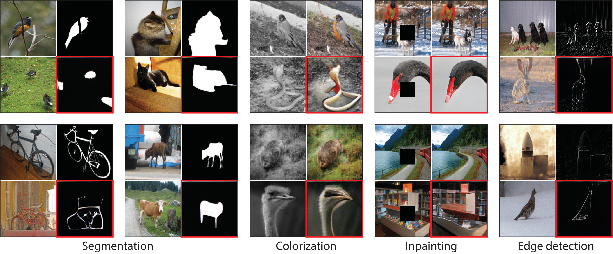
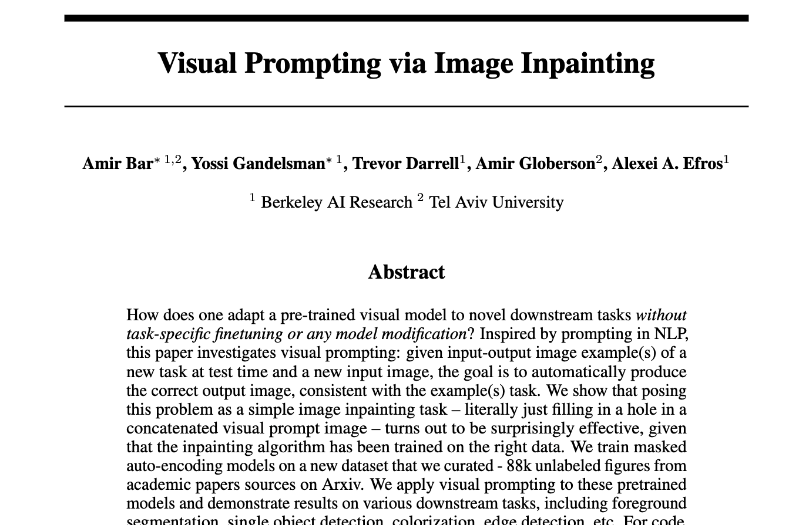
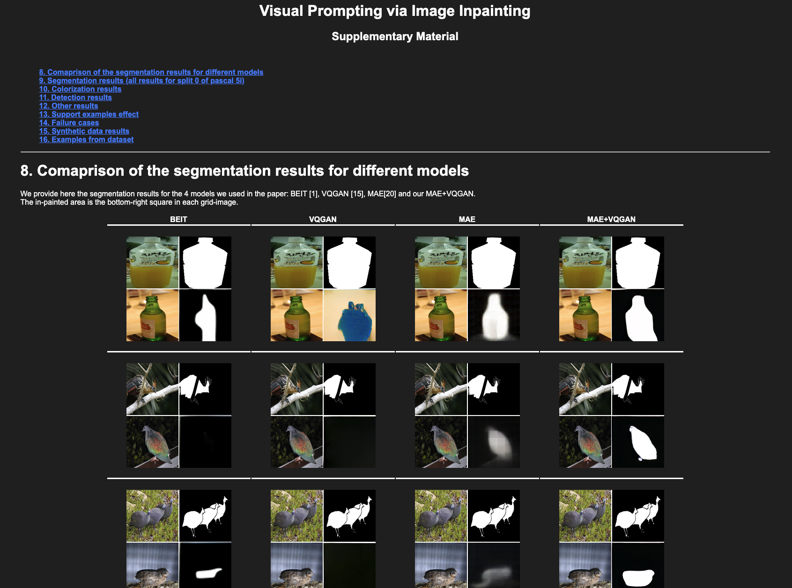

* equal contribution
Visual prompting via Image Inpainting. Top: Prompting Image Inpainting Models. Given input-output example(s) \((x_1, y_1)\) and image query \(x_q\), we construct a grid-like single image called a visual prompt \(x_{vp}\). The visual prompt is composed of the desired task example(s) and a new query image (all in green). The inpainting model goal is then to predict the masked region (red) such that it is consistent with the example(s). Bottom: an inpainting model can solve this way various computer vision tasks, given that it was trained on the right data. The model predictions are annotated in red.
Abstract
How does one adapt a pre-trained visual model to novel downstream tasks without task-specific finetuning or any model modification? Inspired by prompting in NLP, this paper investigates visual prompting: given input-output image example(s) of a new task at test time and a new input image, the goal is to automatically produce the correct output image, consistent with the example(s) task. We show that posing this problem as a simple image inpainting task - literally just filling in a hole in a concatenated visual prompt image - turns out to be surprisingly effective, given that the inpainting algorithm has been trained on the right data. We train masked auto-encoding models on a new dataset that we curated - 88k unlabeled figures from academic papers sources on Arxiv. We apply visual prompting to these pretrained models and demonstrate results on various downstream tasks, including foreground segmentation, single object detection, colorization, edge detection, etc.
Our inpainting results
Visual prompting prediction examples. Each visual prompt was fed to an MAE-VQGAN model trained on the Figures dataset. For each visual prompt, the result is marked in red.
Computer Vision Figures Dataset
We curated a dataset of 88k unlabeled figures from Computer Vision academic papers. We train VQGAN-MAE on randomly sampled crops from these figures, without any additional parsing.

Random samples from our Computer Vision Figures dataset.
Inpainting using MAE-VQGAN
During training, an input image is patchified, masked and fed into a masked auto-encoder. For each masked token, the decoder outputs a distribution over a pretrained VQGAN codebook. The model is trained using cross entropy loss on random crops from our datasets.
Paper
|  |
|
Supplementary Material
|  |